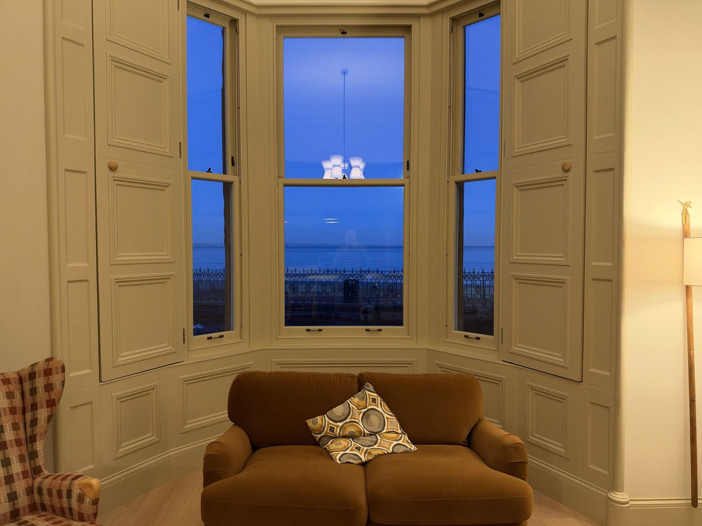

The Annex at Pohutukawa House
A one-bedroom Victorian hideaway on Portobello promenade, Edinburgh's famous swimming beach. The sand is across the road, and the Firth of Forth fills the bay window.
Sea on one side, Edinburgh on the other
The Annex is the single-storey wing of Pohutukawa House, a Category B listed Rogue Baronial villa facing straight onto the promenade: turret, carved sandstone and all. It has its own front door, and it's yours alone for the stay.
It's been fully restored: original cornicing, working timber shutters, a marble fireplace with a wood burner, and a new kitchen and shower room built to a high standard.
Mornings mean light over the water. Evenings mean the fire lit and the promenade lamps coming on below the bay.
Living room and kitchen
One open room under a high Victorian ceiling. Sofa in the bay, wingback by the fire, and a breakfast bar for three on the island.
Bedroom
Quiet and at the back of the house. A cane-headed king-size bed, soft bedding, bedside lamps, and shutters for proper darkness.
Shower room
En-suite, with a level-access rainfall shower and built-in bench, a heated towel rail, and a backlit mirror with demister.
Patio
Your own patio, for your exclusive use, with a table and two chairs. Tucked against the old garden wall, it's the spot for morning coffee or a drink after a swim.
What's included
Kitchen
- Oven and induction hob
- Large fridge-freezer
- Kettle, toaster and cafetière
- Pots, pans and tableware
- Dishwasher
- Washing machine and tumble dryer
Comfort
- Wood-burning stove
- Original working shutters, no curtains
- TV, books and games
- Heated towel rail
- Linen and towels
- Patio for your exclusive use, with table and chairs
Peace of mind
- Grade A fire alarm system
- CO alarms linked to the fire alarm
- Chimney swept every year
- Hosts living in the main house
- Private entrance
Swim, sauna, repeat
Portobello is one of Scotland's best-known sea-swimming beaches. All year round, whatever the weather, swimmers are in the Forth at dawn, at lunch and at sunset. The Annex is right in the middle of it.
Sea swimming
Join the regulars. The Edinburgh Bluetits and the Edinburgh Blue Balls swim here every week, and newcomers are welcome. Never swim alone, and check the tide and conditions first.
Soul Water Sauna
Edinburgh's first wood-fired sauna sits on the promenade, about 100 metres from the door. Book a slot, dip in the sea, warm up, go again.
Victorian Turkish baths
Portobello Swim Centre, built in 1898, still has its original Turkish baths and steam room, along with an indoor pool for days the sea is too wild.
Portobello, Edinburgh's beach
Portobello is Edinburgh's seaside: two miles of sand, a Victorian promenade, cafés, ice cream and independent shops. Walk out of the gate and you're on it.
The city centre is about three miles away, an easy bus ride. That puts you close enough for the Festival in August and Hogmanay at New Year, then back by the sea to sleep.
A house with a story
Pohutukawa House was designed around 1869 by James Campbell Walker, a leading Edinburgh architect better known for schools and civic buildings. It was one of three villas he built side by side on the Portobello waterfront, each in an eclectic Baronial style and each a different design.
Today it's Category B listed and sits within the Portobello Conservation Area. Its listing calls it Rogue Baronial, a fair description of all that turret, carving and invention.
Locals may remember it as a hotel, or as the Dalriada bar. Now it's a home again, and The Annex is its newest chapter.
- 1869Built by James Campbell Walker, one of three waterfront villas
- c. 1970Becomes the Temple Hall Hotel
- 1989Listed Category B
- 2000sThe Dalriada bar opens downstairs, with homes above
- 2020The Dalriada closes its doors
- TodayRestored as a family home, with The Annex for guests
Book your stay
We take bookings through Airbnb, so you can see live availability and pay securely there.
Questions before you book? Email stay@pohutukawa.house
- Maximum 2 guests
- No pets
- Guide to the shutters and stove in The Annex